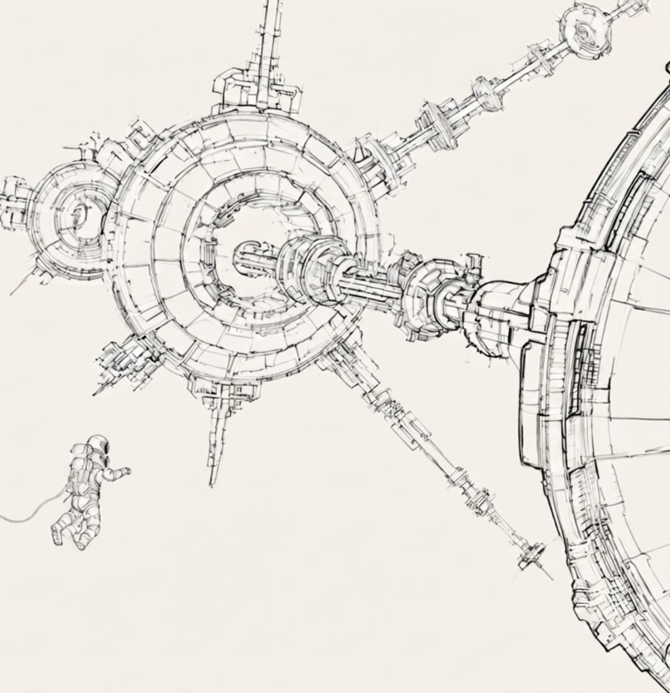
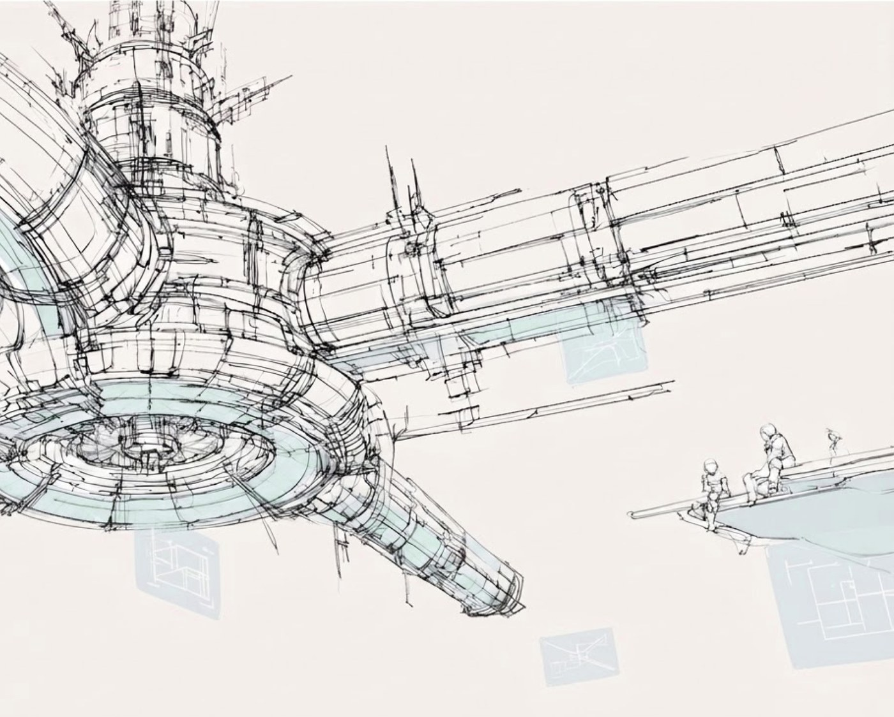

KI bauen,die wirklich lernt
Die Fähigkeit zu lernen ist der einzige Weg, künstliche Intelligenz auf alle Bereiche menschlicher geistiger Arbeit zu übertragen.
Wir bauen die erste Generation von Foundation-Modellen, die kontinuierlich lernen, sich anpassen und besser werden.
Was uns unterscheidet
Modelle,die sich anpassen,nicht nur antworten
Unsere Modelle lernen während der Arbeit: Sie nehmen neues Wissen auf und meistern neue Aufgaben durch Versuch und Irrtum. Keine Datenpipelines, keine eigene Trainingsinfrastruktur, kein ML-Team nötig. Verbinde ein Modell mit einem Workflow, und es lernt im Einsatz.


Wir glauben, dass die Zukunft der KI vielfältig und inklusiv sein sollte. Jedes Unternehmen sollte sein eigenes Wissen nutzen können, um seine eigene KI zu bauen. Jeder Mensch sollte eine auf ihn zugeschnittene KI-Erfahrung haben. Und standardmäßig sollten die Daten in den eigenen Händen bleiben.
Careers
Komm ins Team
Wir bauen die Zukunft der KI und suchen Verstärkung in Forschung, Engineering und Produkt. Bau sie mit uns.